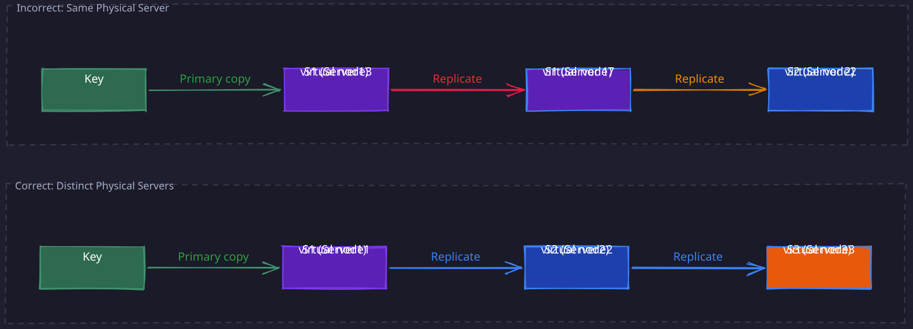

The Story
Most explanations of consistent hashing make it sound elegant and complete — place nodes on a ring, walk clockwise to find the owner. In practice, this produces wildly uneven distributions. With 3 physical nodes, one node might handle 60% of all traffic purely by chance of where it lands on the ring. The part that actually makes consistent hashing work — virtual nodes, where each physical node gets hundreds of positions on the ring — is the part most people skip. Akamai’s founders invented consistent hashing for CDN caching in 1997, and the virtual node trick was central from the start. Without it, the algorithm is a classroom curiosity, not a production technique.
1. Why Consistent Hashing Exists
The core problem in any horizontally scaled system is deceptively simple: given a key and N servers, which server owns that key? The answer must be deterministic (every node agrees), balanced (load is roughly even), and stable (changing N does not reshuffle everything). Consistent hashing is the algorithm that satisfies all three properties simultaneously.
Related Topics: Distributed Caching, 04-Cassandra, 03-DynamoDB
2. The Modulo Hashing Problem
The naive approach is straightforward:
server = hash(key) % N
This works perfectly when N is fixed. The problem is what happens the moment N changes.
1. The Math of Why Modulo Fails
Consider N = 3 servers. A key with hash(key) = 14 maps to server 14 % 3 = 2. Now add one server so N = 4. The same key maps to 14 % 4 = 2 — it happens to stay. But a key with hash 11 moves from 11 % 3 = 2 to 11 % 4 = 3. A key with hash 7 moves from 7 % 3 = 1 to 7 % 4 = 3.
The critical insight is that hash(key) % 3 and hash(key) % 4 are mathematically unrelated operations. A key stays on the same server only if hash(key) % 3 == hash(key) % 4, which requires hash(key) to be a multiple of 12 (the LCM of 3 and 4). For uniformly distributed hashes, the probability of a key staying put is roughly 1/N_new. Going from 3 to 4 servers, approximately 3/4 of all keys remap — not just the keys that belong on the new server.
In general, going from N to N+1 servers causes approximately N/(N+1) of all keys to move. With a million cached items and 10 servers, adding one server invalidates roughly 909,000 cache entries simultaneously.
2. The Consequences
This mass remapping creates a cascading failure:
- Cache avalanche — nearly all requests become cache misses at the same instant
- Thundering herd on the database — the backend receives the full request load that the cache was absorbing
- Self-reinforcing degradation — the database slows under load, requests queue up, timeouts cascade
The system you scaled out to handle more load actually performs worse immediately after adding capacity. This is the fundamental problem consistent hashing solves.
3. The Hash Ring
Consistent hashing decouples key assignment from the server count by introducing an intermediate abstraction: the hash ring.
1. How It Works
Map both servers and keys onto a circular number space using a hash function (typically producing values in the range 0 to 2^32 - 1 or 0 to 2^160 - 1 depending on the hash function). The ring is conceptually a circle where the maximum value wraps around to zero.
To find which server owns a key:
- Hash the key to a point on the ring
- Walk clockwise from that point until you hit a server
- That server owns the key
The key property: a server is only responsible for the arc of the ring between itself and its counterclockwise neighbor. When you add or remove a server, only the keys in one arc are affected — every other key-to-server mapping remains unchanged.
2. Why This Changes Everything
With modulo hashing, every key’s assignment depends on the global value N. With the ring, each key’s assignment depends only on which server is its clockwise neighbor. Adding server S4 between S2 and S3 on the ring means S4 takes ownership of some keys that previously belonged to S3. Servers S1 and S2 are completely unaffected.
4. Server Addition and Removal
1. Adding a Server
When a new server S4 joins the ring, it is hashed to a position that falls within some existing arc — say, the arc between S2 and S3. S4 now splits that arc in two:
- Keys between S2 and S4 are transferred from S3 to S4
- Keys between S4 and S3 remain with S3
- No other server is affected
The amount of data that moves is precisely the keys in the arc that S4 now owns. On average, with K total keys and N existing servers, each server owns K/N keys. The new server takes ownership of one arc, so approximately K/(N+1) keys move — and they all come from a single server (the clockwise neighbor).
2. Removing a Server
When S2 is removed, its entire arc merges with the next clockwise server’s arc. All of S2’s keys are reassigned to S3 (or whichever server is next clockwise). Again, only one server receives additional load, and only S2’s keys move.
3. Quantifying the Improvement
| Operation | Modulo Hashing | Consistent Hashing |
|---|---|---|
| Keys remapped when adding 1 server to N | ~K * N/(N+1) | ~K/(N+1) |
| Servers affected | All N | 1 |
| Example: N=10, K=1M, add 1 server | ~909,000 keys move | ~91,000 keys move |
The improvement is a factor of N — and it gets better as the cluster grows.
5. The Load Imbalance Problem
Basic consistent hashing has a serious practical flaw. With N servers placed on the ring by hashing their identifiers, the arcs between servers are not equal in length. Some servers end up with much larger arcs (and therefore more keys) than others.
With only 3 servers, one server might own 50% of the ring while another owns 15%. The standard deviation of load across servers is O(1/sqrt(N)), which means you need hundreds of physical servers before the natural hash distribution produces anything close to uniform load.
This is unacceptable for most real systems. A server with 3x the average load will become a bottleneck, and you cannot solve it by adding more keys — the problem is the placement of servers on the ring, not the keys.
6. Virtual Nodes
Virtual nodes (vnodes) solve the load imbalance problem by giving each physical server many positions on the ring instead of just one.
1. The Mechanism
Instead of hashing each server once, hash it V times using different identifiers (e.g., hash("S1-0"), hash("S1-1"), …, hash("S1-149")). Each of these V hashes places a virtual node on the ring. All virtual nodes for a physical server map back to that server. A key walks clockwise and lands on whatever virtual node it hits first — then that virtual node resolves to its physical server.
2. Why Virtual Nodes Work: The Law of Large Numbers
The reason virtual nodes produce balanced load has a precise mathematical explanation. Each virtual node “claims” a random arc of the ring. The total load on a physical server is the sum of the arc lengths for all its virtual nodes. Each arc length is a random variable.
By the law of large numbers, the average of V independent random variables converges to their expected value as V grows. The variance of the total load on a server is proportional to 1/V. Doubling the number of virtual nodes per server cuts the standard deviation of load by a factor of sqrt(2).
With V = 150 virtual nodes per server (a common production value), the standard deviation of load across servers drops to roughly 5-10% of the mean. This is tight enough for most production systems.
| Virtual Nodes per Server | Approximate Load Std Dev |
|---|---|
| 1 | Very high (arcs vary wildly) |
| 10 | ~30% of mean |
| 100 | ~10% of mean |
| 150 | ~5-8% of mean |
| 500 | ~3-4% of mean |
3. The Tradeoff
More virtual nodes means better balance, but the ring metadata grows linearly. With 100 physical servers and 150 vnodes each, the ring contains 15,000 entries. Each entry is a hash value plus a server identifier — a few hundred kilobytes total. This is easily manageable in memory, but very large V values (thousands per server) can slow down ring lookups and increase the cost of membership changes since each joining or departing server touches V positions.
7. Weighted Consistent Hashing
Not all servers in a cluster have equal capacity. A machine with 64 GB of RAM should handle more keys than one with 16 GB. Weighted consistent hashing handles this naturally through virtual node counts.
1. The Mechanism
Assign each server a weight proportional to its capacity. A server with weight 2 gets twice as many virtual nodes as a server with weight 1. Since load is proportional to the number of virtual node positions on the ring, a server with 2x the virtual nodes claims approximately 2x the arc length and therefore 2x the keys.
This is elegant because it requires no changes to the core algorithm. The ring, the clockwise walk, and the key assignment logic are all identical. Only the number of virtual nodes per server changes.
2. Practical Example
Consider a cluster with three servers:
- S1: 64 GB RAM, weight 4 —> 600 virtual nodes
- S2: 32 GB RAM, weight 2 —> 300 virtual nodes
- S3: 16 GB RAM, weight 1 —> 150 virtual nodes
S1 will own approximately 4/7 of the keys, S2 approximately 2/7, and S3 approximately 1/7 — matching their relative capacities.
8. Replication on the Ring
In production distributed systems (03-DynamoDB, 04-Cassandra, Riak), consistent hashing is combined with replication for fault tolerance. The standard approach: a key is stored not just on its primary server (the first clockwise hit) but also on the next R-1 distinct physical servers clockwise on the ring.
1. Why Replicas Must Skip Virtual Nodes of the Same Server
This is a subtle but critical detail. When walking clockwise to find replica placements, you must skip virtual nodes that belong to the same physical server as a replica you have already selected.
The reason is correlated failure. If a physical server dies, all its virtual nodes disappear simultaneously. If two of your three replicas happen to be virtual nodes of the same physical server, you effectively have only two copies — losing that one machine loses two replicas at once, leaving you below your replication factor.

In the incorrect case, losing physical server S1 destroys two of three replicas. The correct approach ensures each replica is on a distinct physical server, so any single server failure still leaves R-1 copies.
2. Rack and Datacenter Awareness
Production systems extend this principle beyond individual servers. 04-Cassandra and 03-DynamoDB place replicas on servers in different racks or availability zones. The reasoning is the same — correlated failure. A rack power failure or top-of-rack switch failure takes out all machines in that rack simultaneously. Replica placement must account for these failure domains.
3. Consistency Guarantees
The replication factor R determines how many copies exist. Read and write quorums determine consistency:
- Eventual consistency: writes propagate to replicas asynchronously. Reads may see stale data.
- Strong consistency via quorum: configure write quorum W and read quorum R such that
W + R > N(where N is the replication factor). This guarantees at least one replica in the read set has the latest write. See Quorum Consistency for details.
9. Handling Hotspots
Even with perfect load balancing across servers, some keys are simply more popular than others. A viral post, a celebrity’s profile, or a flash sale item can generate orders of magnitude more requests than average keys. Consistent hashing does not solve this — it distributes keys evenly, not request load per key.
1. Mitigation Strategies
- Micro-sharding (key splitting): For extremely hot keys, append a random suffix (e.g.,
hot_key_0throughhot_key_9) to distribute the key across multiple ring positions. Reads must fan out to all shards and merge results. This trades read complexity for write distribution. - Local caching: Place an in-process cache (L1 cache) in front of the distributed cache. Hot keys are served from local memory, never hitting the ring at all. The tradeoff is cache coherence — local caches must be invalidated or have short TTLs.
- Dynamic virtual node adjustment: Monitor per-server load and dynamically reduce virtual node counts for overloaded servers (pushing their keys to neighbors). This is operationally complex and can cause rebalancing cascades if not carefully rate-limited.
10. Rebalancing Mechanics
Understanding exactly what happens during a rebalance is important for operational reasoning.
1. Node Join
When a new server S_new joins a cluster of N servers:
- S_new’s V virtual nodes are computed and placed on the ring
- Each virtual node of S_new falls within the arc of some existing server
- For each virtual node position, the keys between S_new’s position and its counterclockwise neighbor are transferred from the previous owner to S_new
- Total data moved: approximately K/(N+1) keys (one full server’s worth, spread across V arcs)
- Data transfers happen from multiple existing servers (since V virtual nodes land in different arcs), parallelizing the rebalance
2. Node Departure
When server S_old leaves (planned or crashed):
- All V virtual nodes of S_old are removed from the ring
- Each arc that S_old owned merges with the next clockwise server’s arc
- Keys from S_old’s arcs are now owned by multiple different servers (one per virtual node)
- If S_old crashed, these keys must be served from replicas until anti-entropy repair restores the correct replica count
3. Key Insight: Minimal Disruption
The critical property is that rebalancing is local. Each virtual node addition or removal affects only the immediate clockwise neighbor. There is no global coordination required — each key’s new ownership can be computed independently by any node that has the updated ring membership.
11. Real-World Implementations
| System | Ring Size | Virtual Nodes | Replication | Notes |
|---|---|---|---|---|
| 03-DynamoDB | 2^128 (MD5) | Configurable | 3 replicas across AZs | Uses preference lists for replica ordering |
| 04-Cassandra | 2^64 (Murmur3) | 256 default | Configurable Replication Factor | Rack-aware placement via snitches |
| 02-Memcached (client-side) | 2^32 | ~150 typical | None (cache only) | Implemented in client library (ketama) |
| Riak | 2^160 | Fixed partitions | Configurable RF (default 3) | Ring divided into fixed number of equal partitions |
Revision Summary
- Modulo hashing fails because
hash(key) % Nandhash(key) % (N+1)are unrelated — changing N by 1 remaps ~N/(N+1) of all keys - Consistent hashing maps servers and keys to a ring; keys walk clockwise to find their server. Adding/removing a server moves only ~K/N keys
- Virtual nodes give each physical server V positions on the ring. By the law of large numbers, more virtual nodes reduce load variance proportionally to 1/V
- Weighted hashing assigns more virtual nodes to higher-capacity servers — no algorithm change needed
- Replication places copies on the next R-1 distinct physical servers clockwise; must skip virtual nodes of the same physical server to avoid correlated failures
- Rack/AZ-aware placement extends the correlated-failure principle to infrastructure failure domains
- Rebalancing is local: a joining node splits arcs and takes keys only from clockwise neighbors, moving ~K/(N+1) keys total
- Hotspots are not solved by consistent hashing — they require micro-sharding, local caching, or dynamic vnode adjustment
Deep Understanding Questions
-
If you have N = 100 servers and add one more, consistent hashing moves ~K/101 keys. But those keys all come from different servers (due to virtual nodes). How does this affect the rebalancing throughput compared to a scheme where all keys come from a single server? Ans:
-
A server crashes and is replaced by a new server at a different ring position than the original. How does this differ from the server simply rejoining at its old position? What are the implications for data movement? Ans:
-
With 150 virtual nodes per server and a replication factor of 3, what is the maximum number of physical servers that can fail simultaneously while still guaranteeing every key has at least one live replica? Why is the answer not simply 2? Ans:
-
You observe that one server consistently has 20% more load than others despite using 150 virtual nodes. What are the possible causes, and how would you diagnose whether the issue is hash distribution, key popularity skew, or something else? Ans:
-
During a rolling deployment, servers restart one at a time. Each restart causes that server’s keys to temporarily shift to neighbors, then shift back. What is the impact on cache hit rates during a full rolling restart of an N-server cluster? How does this differ from a simultaneous restart? Ans:
-
Consider a multi-datacenter deployment where each datacenter has its own consistent hash ring. A key is written to DC-East and must replicate to DC-West. If the ring configurations differ between datacenters (different numbers of servers), the key may land on different servers in each DC. How do systems like Cassandra handle cross-DC replica coordination? Ans:
-
Jump consistent hash achieves perfect balance with zero memory overhead but cannot handle arbitrary server removal. In what system architectures is this tradeoff acceptable, and where would it be disastrous? Ans:
-
If you reduce the number of virtual nodes per server from 150 to 10 to save ring metadata size, what specific operational problems would you expect to see? Quantify the expected load imbalance. Ans:
-
Two servers happen to have virtual nodes that are very close together on the ring, creating a tiny arc between them. What is the practical impact, and does this violate any consistency guarantees? Ans:
-
A system uses consistent hashing for cache distribution with no replication. During a network partition, some clients see server S3 as alive and others see it as dead. What inconsistencies arise, and how would you design the client library to handle this? Ans: